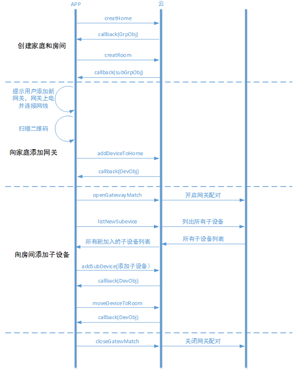

安卓开发的环境配置参考开发框架-安卓-开发环境配置
帐号管理
建议的用户交互流程见 用户交互-帐号管理
1、普通帐号注册

获取账号管理对象
ACAccountMgr accountMgr=AC.accountMgr();
普通帐号注册流程
1、检查手机号是否已注册
AC.accountMgr().checkExist(phone, new PayloadCallback<Boolean>() {
@Override
public void success(Boolean isExist) {
if (!isExist) {
//发送验证码
} else {
//提示手机号已被注册
}
}
@Override
public void error(ACException e) {
//网络错误或其他，根据e.getErrorCode()做不同的提示或处理
}
});
2、发送验证码
AC.accountMgr().sendVerifyCode(phone, 1, new VoidCallback() {
@Override
public void success() {
//检测验证码
}
@Override
public void error(ACException e) {
//网络错误或其他，根据e.getErrorCode()做不同的提示或处理
}
});
3、检测验证码正确性
AC.accountMgr().checkVerifyCode(phone，code, new PayloadCallback<Boolean>() {
@Override
public void success(Boolean result) {
if (result) {
//注册
} else {
//提示验证码错误
}
}
@Override
public void error(ACException e) {
//网络错误或其他，根据e.getErrorCode()做不同的提示或处理
}
});
4、注册
AC.accountMgr().register("", phone, password, name, verifyCode, new PayloadCallback<ACUserInfo>() {
@Override
public void success(ACUserInfo userInfo) {
//获得用户userId和nickName，进入主页或设备管理
}
@Override
public void error(ACException e) {
//网络错误或其他，根据e.getErrorCode()做不同的提示或处理
}
});
2、第三方登录

1、直接使用第三方登录
//APP端在完成OAuth认证登陆之后获取openId和accessToken
AC.accountMgr().loginWithOpenId(ACThirdPlatform.QQ, openId, accessToken, new PayloadCallback<ACUserInfo>() {
@Override
public void success(ACUserInfo userInfo) {
//获得用户userId和nickName，进入主页或设备管理
}
@Override
public void error(ACException e) {
//网络错误或其他，根据e.getErrorCode()做不同的提示或处理
}
});
//绑定一个未被注册的普通帐号
AC.accountMgr().bindWithAccount( email, phone, password, nickName, verifyCode, new VoidCallback() {
@Override
public void success() {
//绑定账号成功
}
@Override
public void error(ACException e) {
//网络错误或其他，根据e.getErrorCode()做不同的提示或处理
}
});
2、在已有普通账号登录时绑定第三方账号
AC.accountMgr().bindWithAccount( email, phone, password, nickName, verifyCode, new VoidCallback() {
@Override
public void success() {
//绑定第三方账号成功
}
@Override
public void error(ACException e) {
//网络错误或其他，根据e.getErrorCode()做不同的提示或处理
}
});
设备管理
独立设备
用户登录/注册后，需要绑定设备才能够使用。对于没有二维码的设备，绑定设备时，首先需在APP上给出配置设备进入Smartconfig状态的提示。然后填写当前手机连接的WiFi的密码，调用startAbleLink将WiFi密码广播给设备，设备拿到WiFi密码后连接到云端然后开始局域网广播自己的subdomainID。App拿到这些信息后调用bindDevice接口绑定设备。

一．激活设备
Ablecloud提供了ACDeviceActivator激活器供你使用，具体使用步骤如下：
1.实例化ACDeviceActivator
ACDeviceActivator deviceActivator=AC.deviceActivator(AC.DEVICE_HF);
注：AC.DEVICE_HF表示汉枫的开发板，如果用的是其它的开发板，则需要改成相对应的 目前支持的开发板有AC.Device_MTK、AC.Device_MX、AC.Device_MARVELL、AC.Device_MURATA、AC.Device_WM、AC.Device_RAK
2.获取wifi ssid
deviceActivator. getSSID()
3.激活设备
app通过startAbleLink广播自己的wifi密码，设备成功连上云之后通过广播通知app同时获取设备物理id和subDomainId（用来区分设备类型）。当前只支持配置手机当前连接的wifi
deviceActivator.startAbleLink(ssid, password, AC.DEVICE_ACTIVATOR_DEFAULT_TIMEOUT, new PayloadCallback
@Override
public void error(ACException e) {
//e.getErrorCode为错误码，e.getMessage为错误信息
}
});
二．绑定设备
4.开始绑定
在成功激活设备后的回调方法中，通过物理id绑定设备
AC.bindMgr().bindDevice(subDomain, physicalDeviceId, deviceName, new PayloadCallback
@Override
public void error(ACException e) {
//e.getErrorCode为错误码，e.getMessage为错误信息 } });
网关设备
网关的绑定流程和WiFi设备是一样的。网关绑定以后绑定子设备的建议流程如下：

该流程只是建议流程的一种。其中openGatewayMatch和closeGatewayMatch接口都是为了方便软件开启配对而开发的接口。如果使用硬件上的操作（如网关上有按钮等）完成网关和子设备的配对，则不需要用到这两个接口。
东生补充开发指导
home模型
说明参见基本介绍-功能介绍-home模型
建议的用户交互参见用户交互-home模型
home模型下添加独立设备
建议的流程如下：

东生补充开发指导
home模型下添加网关型设备且网关没有二维码
网关没有二维码时，一般是网管在连接云端以后在局域网广播自己的物理ID。APP接收广播然后绑定设备。

东生补充开发指导
home模型下添加网关型设备且网关有二维码
网关有二维码时，不需要通过接收广播来获取设备物理ID。流程如下：

东生补充开发指导
OTA
说明参见基本介绍-功能介绍-OTA
建议的用户交互参见用户交互-OTA

开发OTA之前需要在开发环境中配置友盟的推送服务，配置方法参见：开发框架-安卓-环境配置
1、在应用的主Activity onCreate() 函数中开启推送服务
AC.notificationMgr().init();
2、在登录成功之后添加推送别名
AC.notificationMgr().addAlias(info.getUserId(), new VoidCallback() {
@Override
public void success() {
//别名添加成功
}
@Override
public void error(ACException e) {
//别名添加失败，检查前面步骤的配置是否有问题
}
});
3、设置友盟的消息处理
AC.notificationMgr().setMessageHandler(new UmengMessageHandler() {
@Override
public void dealWithCustomMessage(final Context context, final UMessage msg) {
new Handler(getMainLooper()).post(new Runnable() {
@Override
public void run() {
// 自定义消息处理
UTrack.getInstance(getApplicationContext()).trackMsgClick(msg, false);
Toast.makeText(context, msg.custom, Toast.LENGTH_LONG).show();
}
});
}
@Override
public Notification getNotification(Context context, UMessage msg) {
//接收到Notification消息处理
}
});
4、在退出登录之后移除掉旧的别名
AC.notificationMgr().removeAlias(userId, new VoidCallback() {
@Override
public void success() {
//别名注销成功
}
@Override
public void error(ACException e) {
//别名注销失败
}
});
推送
东生补充开发指导
实时消息
东生补充开发指导
和云端通信
说明参见基本介绍-功能介绍-和云端通信
建议的用户交互参见用户交互-和云端通信
1、发送到设备
东生补充开发指导
2、发送到服务
东生补充开发指导
局域网通信
说明参见基本介绍-功能介绍-局域网通信
建议的用户交互参见用户交互-局域网通信
东生补充开发指导